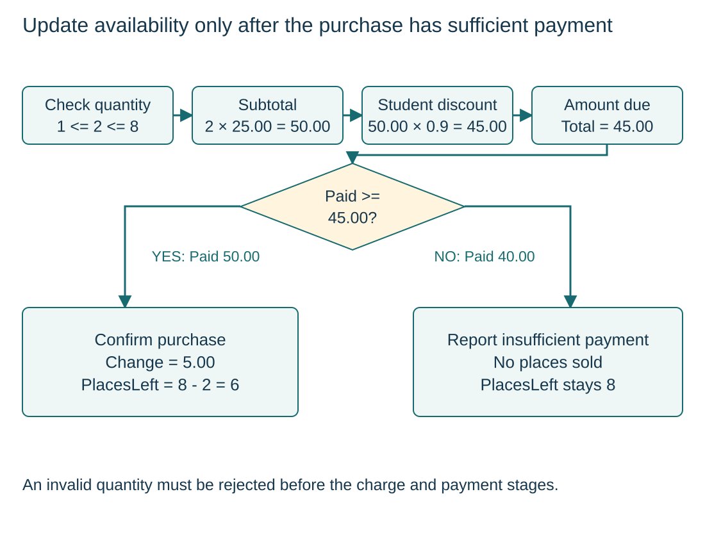

Decompose the purchase requirements
S9.02.A01S9.02.A02
Visual overview
Update availability only after the purchase has sufficient payment

Visual transcript
- Quantity = 2, PlacesLeft = 8, Student = TRUE and TicketPrice = 25.00.
- The quantity is valid; subtotal 50.00 becomes 45.00 with the 10% discount.
- Paid 50.00 permits confirmation, change 5.00 and PlacesLeft 6. Paid 40.00 does not change PlacesLeft.
Core explanation
Rules for this ticket purchase
- Quantity: Integer Quantity must be at least 1 and no greater than non-negative PlacesLeft.
- Charge: Each identical ticket costs 25.00. Student TRUE gives 10% off the whole subtotal.
- Payment: After showing Total, confirm, give change and reduce PlacesLeft only if Paid >= Total.
Agree responsibilities and effects
Assume correctly typed inputs and non-negative Paid. Decompose the work into checking quantity, calculating charge and completing payment. The charge function returns the amount; the completion procedure reports the result and updates availability only after sufficient payment. The detailed algorithm expands these responsibilities inline.
Worked example · Trace the agreement between modules
- Request
Quantity 2, PlacesLeft 8, Student TRUE.
- Quantity decision
The requested 2 tickets fit the available 8.
- Charge result
Two tickets give 50.00 before discount and 45.00 due.
- Payment result
Paid 50.00 gives change 5.00 and leaves 6 places after confirmation.